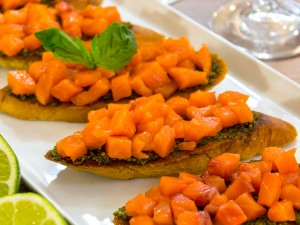

Брускетта с семгой и песто
Брускетта — популярное блюдо итальянской кухни. Это зажаренные кусочки багета (чиабатты) с начинкой. Начинка может быть любой, я предлагаю попробовать вариант с песто и семгой. Пропорции не указываю, они могут быть любыми.
Ингридиенты:

багет
семга (я использовала малосольную)
соус Песто
растительное масло
лайм (или лимон)
Приготовление
Багет нарезать кусочками толщиной около 1 см.
Выложить в форму для запекания.
Немного сбрызнуть маслом.
Поставить в духовку.
Запекать при температуре 180 градусов в течение 10–15 минут.
Остудить.
Семгу нарезать небольшими кубиками.
Кусочки батона смазать песто.
Выложить семгу.
Сбрызнуть соком лайма или лимона.